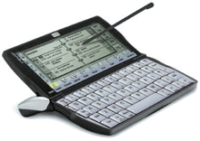

|

Первая игрушка, о которой хотелось рассказать - Psion Revo Plus. Это
PDA -
Personal Digital Assistant.
В русском варианте это КПК - Карманный
Персональный Компьютер. На самом деле наша модель называется Diamond Mako,
но поскольку Mako - это абсолютно точный клон Псиона, то логично называть
эту игрушку Псионом.
Итак, Psion Revo Plus (Diamond Mako).
В нескольких словах, что у него в
потрохах: (спасибо сайту MyPsion.ru)
- Процессор: RISC
ARM710T 32-разрядный, 36 МГц.
- Память:
Внутренняя ROM - 8 Мб. RAM - 16 Мб.
- ЖК дисплей: 480
x 160 точек, 16 оттенков серого, пиксел 0,24 мм. Подсветка отсутствует.
- Клавиатура:
Стандартная QWERTY клавиатура типа Notebook (53 клавиши) + сенсорные кнопки
вызова приложений
- Громкоговоритель: Широкополосный пьезодинамик.
- Операционная система: Многозадачная 32-разрядная Symbian EPOC32 (ER5).
Почему Psion, а не модный Palm, или еще более модный iPaq? Что Palm, что
iPaq отличаются от Psion отсутствием клавиатуры. То есть теоретически к
ним можно приобрести отдельно клавиатуру,
но, извините, таскать с собой
еще и внешнюю клавиатуру?! Нет уж, увольте. Эти устройства и так с трудом
в кармане помещаются (даром, что называются карманными :) То есть сама
игрушка в кармане еще более менее, но клавиатуре там места уже нет. Ну,
разве что на вас штаны от Докерс - Dockers Mobile Pant
sports :-) -
специальные брюки с
кучей карманов для любителей гаджетов:
Хмм, кстати, штаны выглядят неплохо, да и цена ($52) нормальная, так
что... :-) По поводу iPaq могу сказать - мне не нужен такой мощный
процессор, цветной экран, звук для проигрывания MP3.
Точнее - если все это будет,
не откажусь, но специально тратить на это кучу денег, да еще и получить в
конце-концов аппарат, толщиной около 3.5 см (с установленным блоком расширения) с отсутствующей
клавиатурой -
спасибо, я лучше подожду новых моделей:)
У Псиона как я уже сказал - полная клавиатура. Конечно, не 102 клавиши,
как у настольных компов, но честная 53 клавиши борда. В конце-концов на
моем рабочем ноутбуке их всего 85, а ведь это большая, мощная машина
(PIII-800), так что для такого мелкого недо-компьютера, как Псион - 53
клавиши - очень прилично :) Единственная проблема - русский алфавит
существенно больше английского, и все русские буквы на символьные клавиши
не помещаются. Пришлось на цифры переопределить. Но это мелочи, о которых
грустит только Наташа - любительница понабирать тексты где-нибудь в метро
или во время обеденного перерыва в какой-нибудь кафешке :-)
Что еще у Псиона хорошего - много чего. Например - экран. 480х160 - этого
уже практически достаточно для нормального веб-серфинга, и уж совершенно
определенно хватает для комфортного чтения книг. Контрастность выше всяких
похвал. Точки очень мелкие - буквы комфортно выглядят нарисованными, а не
собранными из пикселов. Например, Palm m505 и
рядом не валялся, даже при
том, что у него новый цветной экран (новый, в смысле - совершенно новая
модель - это скрещенные Palm Vx и Palm IIIc).
По большому счету, вся недо-компьютерность Псиона ограничивается только
размерами экрана и не слишком большой памятью - 16 Мб. 8 Мб не считаем -
это ROM, в котором лежит операционка, и особого интереса для пользователя
не представляет. Но нужно учитывать, что средняя программа для Псиона
имеет размер 200 Кб. Так что 16 Мб - это более чем достаточно. Кстати, у
Палма всего 8 Мб на все про все.
Приятные мелочи. Стабильная операционная система - на моей памяти (и сюдя
по отзывам других владельцев Псионов) не падала ни разу, никаких глюков. К
примеру - WindowsCE у iPaq падает довольно часто. Не скажу насколько
часто, но факт - падает иногда. Другая приятность - ОС не считает себя
умнее человека. Маленький пример. Мне понадобилось перенести с работы
некоторые архивы (около 10 Мб). Я просто закачал все это в Псион, и унес
домой (интернет не работал - спасибо дорогому провайдеру Rogers).
ОС
естественно была совершенно не в курсе - что это за файл, но все, что она
сделала - показала иконку с вопросительным знаком, и все на этом. На
следующий день я встретился с приятелем, у него Palm m505. Попробовали
перекинуть ему маленький тектовый файлик - и что вы думаете?! Палм заявил,
что не понимает формата файла, и... автоматически удалил этот файл!!! :-О
Вот так-так... Я очень надеюсь, что эта фича (удаление неизвестных файлов)
в Палме настраивается, иначе Палм упадет в моих глазах еще ниже, хотя
куда-уж ниже-то :)))
Что с ним можно делать? Много чего. Могу сказать про себя - ну,
естественно, джентельменский набор для подобных игрушек - адресная книга,
телефоны, записная книжка (удобно на митингах записки делать), скетч
(рисовалка для тех-же митингов), расписание (дневник), Word, несколько игрушек
(Lines, MineSweeper, Poker...), eBook - читалка книжек. Чаще всего я просто читаю
книги - пока кофе пью и курю на перерывах :) Кстати, кто еще не знает -
Библиотека Максима Мошкова
Для любителей программирования - есть три языка: OPL32, C++ и Java. Как
мне ни обидно, но Java в этом аппарате довольно бессмысленна. Господа из
Symbian умудрились перенести совершенно обычную JVM (виртуальную машину),
которая не отличается компактностью. В результате установленный JRE (Java
Run-Time Environment) занимает на диске около 6 Мб, и соответственно,
столько-же занимается места при запуске любого явовского приложения, что в
сумме составляет 12 Мб, что при наличии всего 16 Мб становится проблемой.
Почему они не взяли KVM (ядро от J2ME - Java 2 Platform, Micro Edition), которое
занимает не 6 Мб, а около 1.5 Мб от силы - загадка. Но результат печальный
- на данной модели Псиона Ява не имеет смысла :( Для меня это было очень
неприятное открытие. То есть теоретически можно, конечно, но тяжело. Может
быть если когда-нибудь приобрету нечто подобное Psion netBook
(фирменное описание), то можно
будет поиграться и с Явой :) Вот, кстати, на JavaSoft.com статья появилась по этому
поводу.
Следовательно, остается только OPL32 и C++. Насчет OPL32 сказать могу лишь
то, что это язык, подобный Visual Basic. Я его не пробовал, и ничего
другого сказать не могу. Добавлю лишь, что большая часть всех программ
написана именно на OPL32, и те, кто пробовал, говорят, что все довольно
неплохо. Есть даже редакторы и средства разработки для самого Псиона (на
самом Псионе). Ну, С++ - как обычно. Все на компьютере. Есть эмуляторы для
отладки на компьютере. Оптимально,
производительно. Сложнее, чем OPL32, конечно. Если я когда нибудь буду
что-то пробовать написать для Псиона, то именно на C++ - нет совершенно
никакого желания изучать еще один птичий язык - их было слишком много
(более чем достаточно) в моей практике :(
Последняя приятность (но не самая мелкая :) (кстати, английский вариант фразы мне
нравится намного больше - "Last, but not the least") - цена. Обычная цена US$300.
Но! Фирма Diamond решила уйти с Американского рынка, в связи с чем сейчас идут распродажи
Diamond Mako просто за бесценок - US$100. За такие деньги нет совершенно ничего близкого к
такой игрушке. Для желающих дам список онлайн-магазинов, распродающих Mako по сотне долларов:
Я покупал в
sparco.com.
И в конце - небольшой список линков про Псион и для Псиона:
|